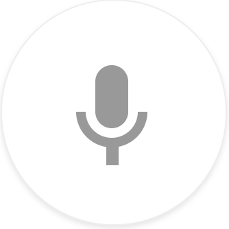

Speech to Text Fun 
Click on the microphone to start recording. Make sure your browser allows microphone access. You may make the text field bigger by dragging the bottom right corner. Speak clearly and loudly to be heard correctly. State punctuation. Small background noise when using this program is ok.